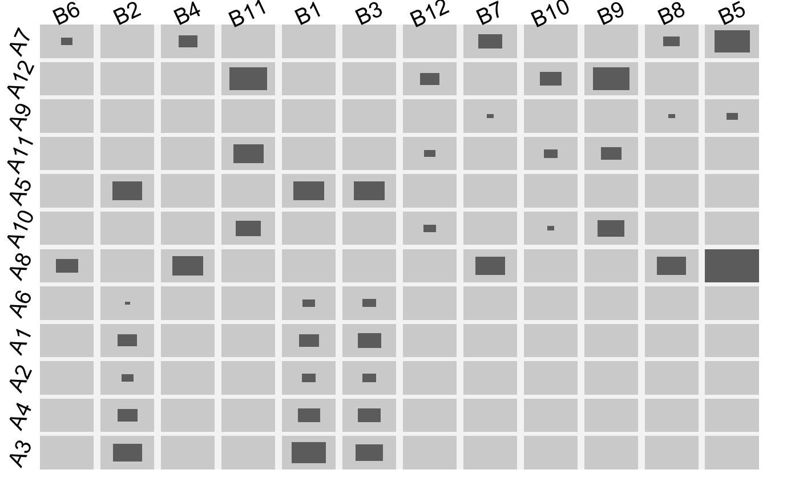

fluctuation diagrams
fluctile.RdCreate a fluctuation diagram from a multidimensional table.
fluctile(tab, dir = "b", just = "c", hsplit = FALSE, shape ="r", gap.prop = 0.1, border = NULL, label = TRUE, lab.opt = list(), add = FALSE, maxv = NULL, tile.col = hsv(0.1,0.1,0.1,alpha=0.6), bg.col = ifelse(add,NA,"lightgrey"), tile.border = NA, vp = NULL, ... )
Arguments
| tab | The table which is to be plotted. |
|---|---|
| dir | The bar/rectangle direction: |
| just | A shortcut version of the argument used in grid for the anchorpoint of the rectangles: |
| hsplit | A logical for alternating columns and rows or a vector of logicals with TRUE for each variable on the x-axis. |
| shape | Instead of rectangles ( |
| gap.prop | proportion of the gaps between the rows/columns within each block. |
| border | The proportion of the space used for the labels. |
| label | Whether or not to plot labels. |
| lab.opt | A list with options for the labels. Currently |
| add | Whether to create a new plot or add it to an existing one. |
| maxv | The maximum value for the scale. Default is equivalent to |
| tile.col | The color of the tiles. |
| bg.col | The background color in each cell. |
| tile.border | The color for the tile border. |
| vp | An optional viewport to plot in. |
| … | dots |
Value
The viewport tree behind the graphic.
Note
This was part of the Google Summer of Code 2011.
See also
Examples
#> viewport[base]#> viewport[base]# the standard fluctuation diagram with centralized octagons fluctile(M2, shape = "o")#> viewport[base]#another option such as it is used in iplots or MONDRIAN # is to plot the rectangles in the bottom left corner fluctile(M2, just ="lb")#> viewport[base]# a multiple barchart fluctile(M2, just ="b", dir = "h")#> viewport[base]# or with vertical bars fluctile(M2, just ="l", dir = "v")#> viewport[base]# a same-binsize-plot fluctile(M2, dir = "n")#> viewport[base]require(MASS) fluctile(xtabs(Freq~Type+Infl+Cont+Sat,data=housing),dir="h",just="b", lab.opt=list(lab.cex=1))# NOT RUN { # airport footprints: Unique Carrier vs. Destination require(grid) iata <- c("ATL","BOS","CLT", "DEN" , "DFW", "DTW", "EWR", "IAH", "LAS", "LAX", "MCO", "MSP", "ORD", "PHX", "SFO", "SLC") mat.layout <- grid.layout(nrow = 4 , ncol = 4 , widths = 1/4, heights=1/4) grid.newpage() vp.mat <- viewport(layout = mat.layout) pushViewport(vp.mat) for(i in seq_along(iata)){ ap <- assign(iata[i],read.table( paste("http://rosuda.org/lehre/SS09-f/datasets/air07s_", iata[i],".txt",sep=""),sep="\t",quote="",header=T) ) tt <- with(ap, table(UniqueCarrier,Dest)) jj <- ceiling(i/4) ii <- i - (jj-1)*4 fluctile(optile(tt,iter=100),vp=c(ii,jj), lab.opt=list(rot=0,lab.cex=0.5), border=c(0.1,0.02,0.02,0.15),gap.prop=0.2) pushViewport(viewport(layout.pos.row = ii, layout.pos.col = jj)) grid.text(iata[i],0.5,0.8,gp=gpar(col=2)) popViewport() } popViewport() rm(ap) # }